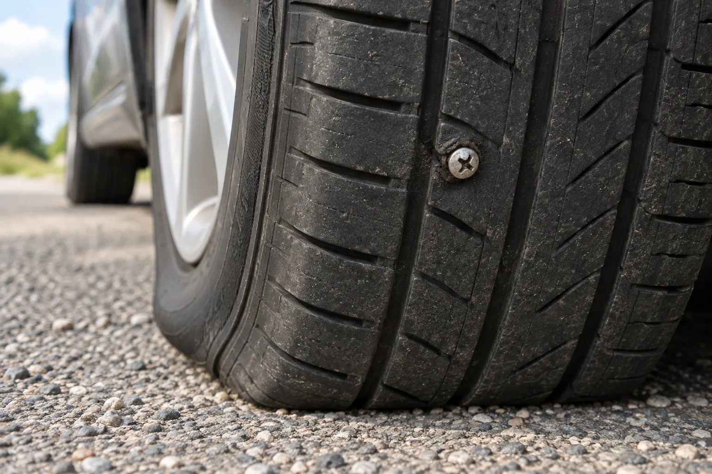
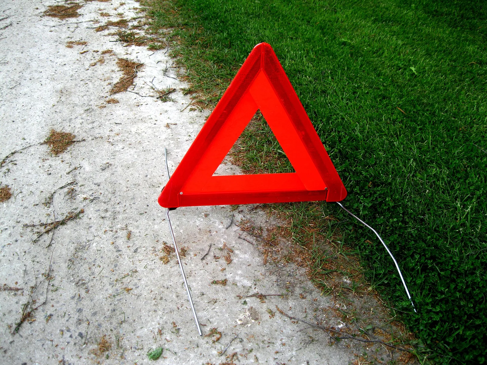
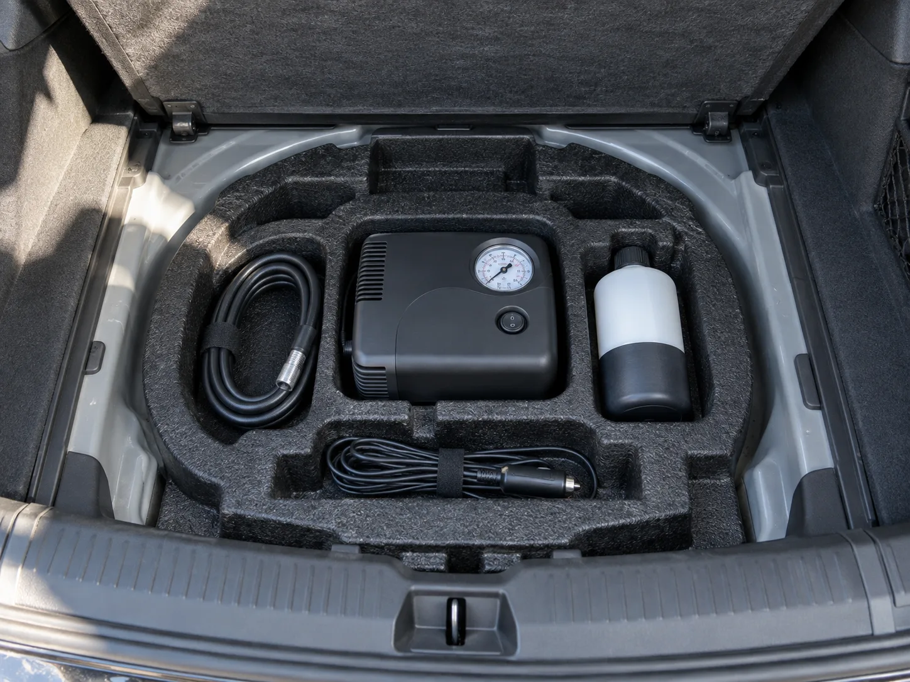
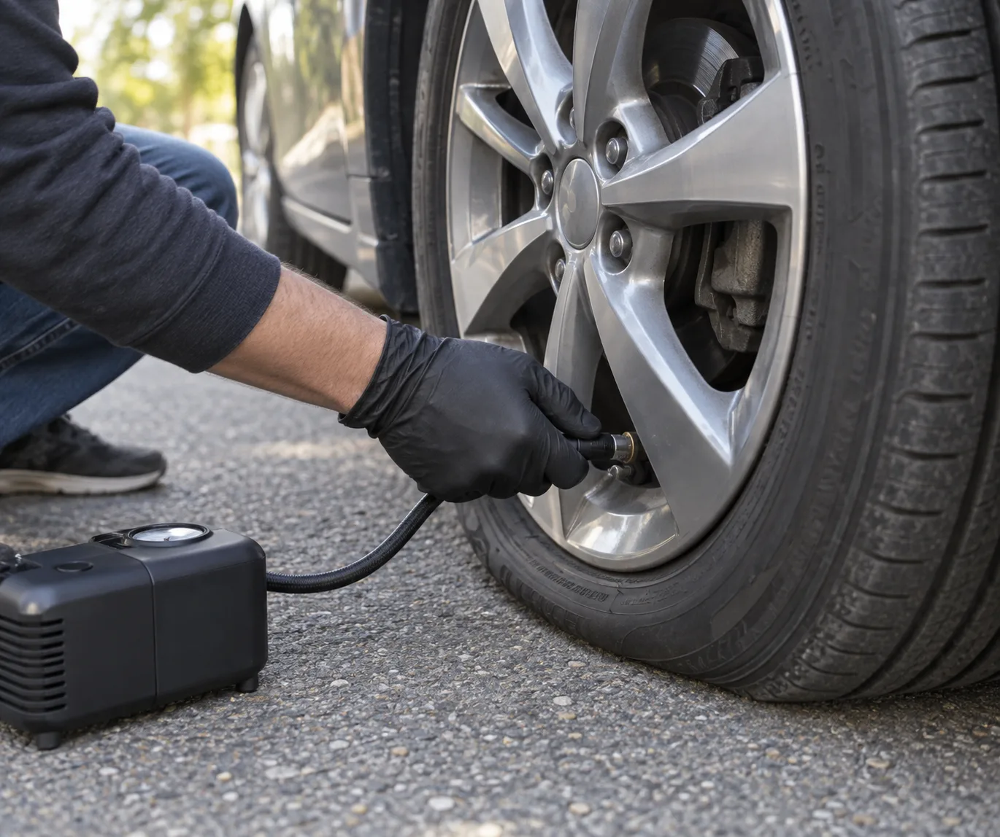
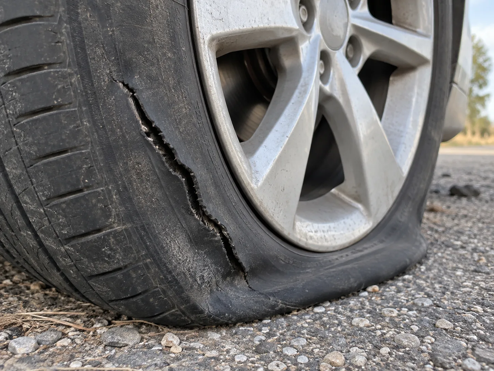
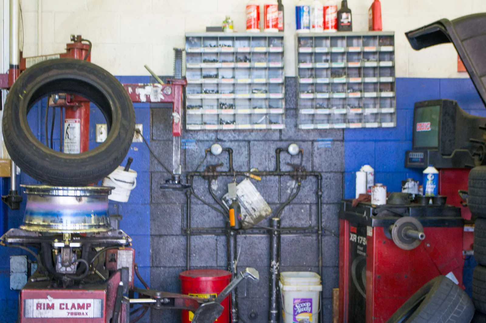
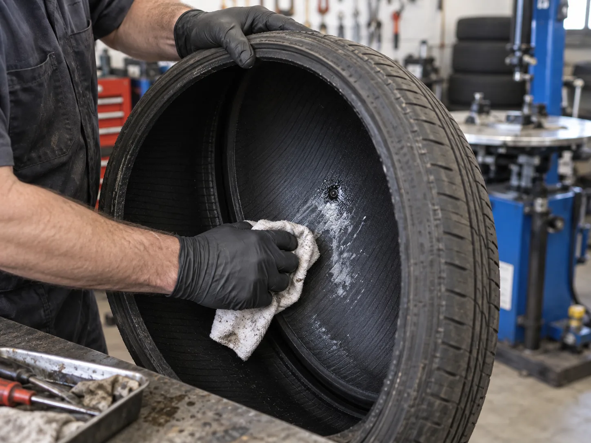
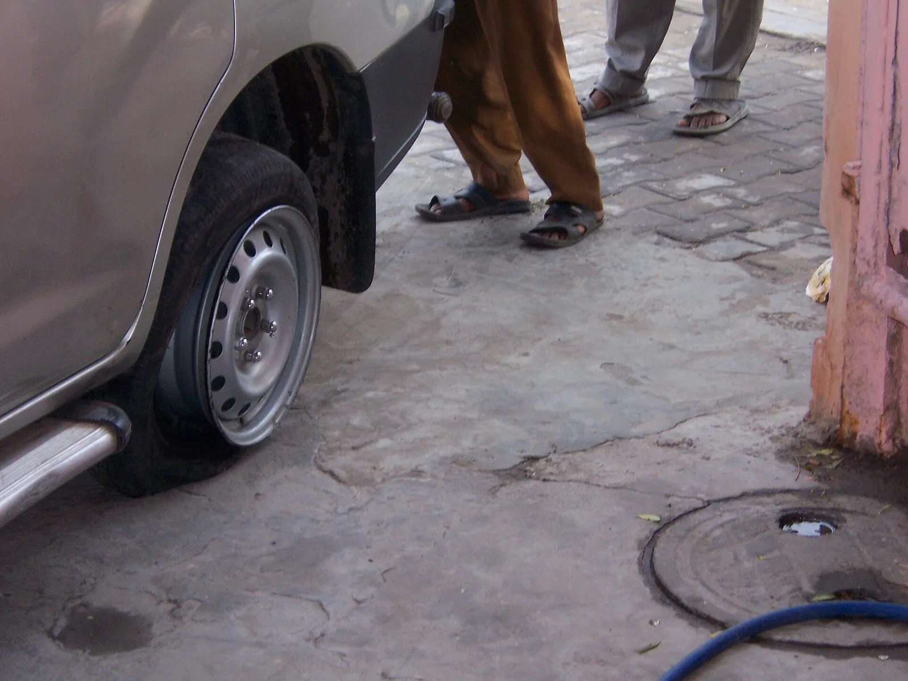

▲ 트레드(접지면) 한가운데 나사가 박혀 공기가 빠진 타이어. 이런 펑크가 리페어 키트로 응급조치할 수 있는 대표적인 경우다 이미지=AI 생성
주행 중 핸들이 한쪽으로 쏠리거나 TPMS 경고등이 켜져 차를 세웠더니 타이어 하나가 주저앉아 있다. 트렁크 바닥을 열어 보니 스페어타이어는 없고 작은 컴프레서와 실런트 병만 들어 있다. 요즘 신차는 이런 경우가 많다. 이 키트는 제조사마다 타이어 모빌리티 키트, 타이어 응급 처치 키트, 타이어 리페어킷(TMK) 등으로 부르는데, 쓰는 순서만 알면 10분 안팎이면 응급조치를 끝낼 수 있다. 무엇을 챙겨 둘지는 트렁크 비상용품 체크리스트에 정리해 두었고, 이 글은 펑크가 난 지금 이 순간 할 일만 다룬다.
1. 지금 할 일 — 안전 확보, 그다음 원인 확인
키트를 꺼내기 전에 사람부터 안전한 곳에 둬야 한다. 현대차 취급설명서는 "견고하고 평탄한 곳에서 파킹 브레이크를 걸어 차량이 움직이지 않도록 한 후" 키트를 사용하라고 적고 있다. 경사로나 차로 한가운데서 작업하는 것은 금물이다.
- 비상등을 켜고 갓길이나 넓은 공터로 천천히 이동한다. 공기가 빠진 채 오래 달리면 멀쩡했던 타이어 구조까지 망가진다(아래 5장). 안전한 곳까지만 짧게 움직이자.
- 변속 레버 P, 파킹 브레이크, 시동 유지. 키트 컴프레서는 차 전원을 쓰므로 현대차 매뉴얼도 작업 중 시동을 걸어 두도록 안내한다.
- 고장자동차 표지(안전삼각대)를 차 뒤쪽에 세운다. 국토교통부 안내는 차가 멈췄을 때 비상등을 켜고 트렁크를 열어 두고 삼각대를 설치해 뒤차에 알리라고 한다.
- 고속도로라면 작업보다 대피가 먼저다. 한국도로공사가 강조하는 '비트밖스'(비상등→트렁크 열기→가드레일 밖 대피→스마트폰 신고)대로, 탑승자 전원이 가드레일 밖으로 나간 뒤 판단하자. 갓길 폭이 좁거나 차들이 바짝 지나간다면 키트 작업을 포기하고 견인을 부르는 게 맞다.

▲ 길가에 세운 차량용 안전삼각대. 뒤따라오는 차가 멀리서 알아볼 수 있도록 차 뒤쪽 충분히 떨어진 곳에 둔다 ⓒ Santeri Viinamäki (Wikimedia Commons, CC BY-SA 4.0)
안전이 확보됐다면 펑크 난 타이어를 한 바퀴 살펴본다. 확인할 것은 두 가지다. 첫째, 손상 위치. 노면에 닿는 접지면(트레드)인지, 옆면(사이드월)이나 모서리(숄더)인지. 둘째, 손상 크기. 못·나사처럼 작은 이물이 박힌 것인지, 찢어지거나 크게 파인 것인지. TPMS 경고등이 켜진 것만으로 원인을 알 수는 없으니 눈으로 확인해야 한다(경고등 자체에 대해서는 TPMS 경고등 가이드 참고).
📍 박힌 못·나사는 뽑지 말자
현대차 취급설명서는 "못이나 나사와 같은 날카로운 물질이 타이어에 박혔을 경우 임의로 제거하지 말고 그대로 둔 상태로" 점검·정비를 받으라고 안내한다. 박힌 이물이 구멍을 어느 정도 막고 있기 때문에, 뽑으면 공기가 한꺼번에 빠지고 구멍도 커질 수 있다. 실런트는 이물을 그대로 둔 채 주입해도 된다.
2. 리페어 키트 사용 순서 — 현대차 매뉴얼 기준
키트 구성은 대개 컴프레서(공기 주입기), 실런트(봉합제) 병, 호스, 전원 플러그다. 실런트를 타이어 안에 넣고 달리면 진동과 열로 실런트가 안쪽에 고르게 퍼지면서 구멍을 막는 원리다. 아래는 현대차 2026년형 쏘나타 취급설명서의 '타이어 응급 처치 키트(TMK)' 순서를 정리한 것이다. 병을 끼우는 방식(나사식·끼움식)이나 버튼 위치는 차종·키트마다 다르니 키트 뚜껑이나 본체에 붙은 그림 설명을 함께 보자.

▲ 트렁크 바닥 덮개 아래 스페어타이어 자리에 놓인 리페어 키트. 압력계가 달린 컴프레서, 실런트 병, 호스와 전원 케이블로 구성된다 이미지=AI 생성
- 실런트 병을 흔든 뒤 호스를 연결하고, 병을 컴프레서에 끼운다. 이때 컴프레서의 공기압 조절(감압) 버튼이 눌려 있지 않은지 확인한다.
- 펑크 난 타이어의 밸브 캡을 열고 실런트 주입 호스를 밸브에 단단히 돌려 끼운다.
- 컴프레서 스위치가 꺼진 상태에서 전원 플러그를 차의 전원 소켓(시거잭)에 꽂는다.
- 시동을 건 상태에서 컴프레서를 켜 5~7분 동안 실런트와 공기를 주입한다. 목표는 차량 규정 공기압(운전석 도어 옆 B필러 라벨에 표시)이다. 현대차는 컴프레서를 10분 넘게 돌리지 말라고 안내한다.
- 컴프레서를 끄고 호스를 분리한 뒤 키트를 차에 싣는다.
- 곧바로 20km/h 이상의 속도로 7~10km, 또는 10분 정도 주행한다. 이 과정에서 실런트가 타이어 안쪽에 퍼져 구멍을 막는다. 기아도 같은 기준(약 20km/h 이상, 약 7~10km 또는 약 10분)을 제시한다.
- 안전한 곳에 다시 세우고 이번엔 컴프레서 호스를 밸브에 직접 연결해 공기압을 확인·보충한다. 현대차 매뉴얼은 공기압이 29psi(200kPa) 이하라면 주행하지 말라고 하고, 공기압이 일정하게 유지되지 않으면 6번 주행을 한 번 더 하라고 안내한다.

▲ 휠 가장자리의 타이어 밸브에 컴프레서 호스를 돌려 끼우는 모습. 헐겁게 끼우면 실런트와 공기가 새어 나온다 이미지=AI 생성
📍 10분 안에 공기압이 안 오르면 멈추자
한국GM 공식 블로그(2014년 게시글)는 쉐보레 리페어킷 사용법을 설명하며,10분 안에 규정 공기압까지 올라가지 않으면 타이어가 심하게 손상된 것이므로 더 달리지 말고 도움을 요청하라고 안내한다. 실런트가 막을 수 있는 크기를 넘어섰다는 신호다. 이 경우 컴프레서를 계속 돌려 봐야 소용이 없다.
3. 키트로 안 되는 경우 — 이럴 땐 손대지 말자
리페어 키트는 '접지면의 작은 구멍'을 위한 도구다. 현대차 취급설명서는 사용 대상을 "못이나 날카로운 물체에 의한 트레드 부위 펑크"로 한정하고, "4mm 이상의 타이어 손상"과 "타이어가 심각하게 손상되거나 타이어 측면이 손상된 경우"에는 쓰지 말라고 적고 있다. 크기 기준은 차종별 매뉴얼마다 조금씩 달라서, 일부 기아 취급설명서는 6mm를 넘는 손상에는 효과가 없다고 적고 있다. 내 차 매뉴얼을 확인하기 어렵다면 더 보수적인 4mm를 기준으로 삼는 편이 안전하다.
| 상황 | 왜 안 되나 | 할 일 |
|---|---|---|
| 옆면(사이드월) 찢어짐·구멍 | 현대차는 측면 손상 시 사용 금지. 미쉐린은 옆면이 구조상 수리가 대체로 불가능한 부위라고 설명 | 견인 후 타이어 교체 |
| 모서리(숄더) 부위 손상 | 미쉐린은 숄더 부위는 수리가 불가능해 교체가 필수라고 안내 | 견인 후 교체 |
| 손상 크기 4mm 이상 | 현대차 매뉴얼 기준(일부 기아 매뉴얼은 6mm). 실런트가 막을 수 있는 크기를 넘음 | 키트 쓰지 말고 긴급출동·견인 |
| 타이어가 크게 찢어지거나 심하게 손상됨 | 현대차는 "심각하게 손상된 경우" 사용 금지 | 견인 |
| 10분 안에 규정 공기압까지 안 오름 | 한국GM 안내: 심한 손상의 신호 | 주행 중단, 도움 요청 |
| 분배 주행 뒤 29psi(200kPa) 이하 | 현대차 매뉴얼: 이 경우 주행 금지 | 재주행해도 유지 안 되면 견인 |
| 휠이 휘거나 깨짐 | 실런트는 타이어 구멍을 막는 용도라 휠 쪽 누설은 해결하지 못함 | 견인 후 정비소 점검 |
| 실런트 유효기간 경과 | 현대차는 유효기간이 지난 실런트는 쓰지 말고 새것을 사라고 안내 | 병에 표시된 날짜 확인, 지났다면 견인 |

▲ 옆면이 길게 찢어진 타이어. 이런 손상은 실런트로 막을 수 없어 견인 후 교체해야 한다 이미지=AI 생성
4. 사용 후 — 80km/h 이하로, 가까운 정비소까지
실런트로 막은 타이어는 '집에 갈 수 있게 해 주는' 상태일 뿐 수리가 끝난 게 아니다. 현대차 취급설명서는 "80km/h 이하 속도로 200km 이내의" 직영 서비스센터나 블루핸즈에서 타이어를 교체하라고 안내한다. 기아 타스만 매뉴얼도 안전을 위해 약 80km/h를 넘기지 말고, 이상 진동이나 소음이 느껴지면 속도를 줄여 안전한 곳에서 점검을 받으라고 적고 있다. 한국GM 공식 블로그(2014년 게시글)도 쉐보레 리페어킷 응급조치 뒤 80km/h 초과 주행을 금지한다고 안내했다. 실런트 병에 붙은 속도 제한 스티커가 있다면 떼어 계기판 근처처럼 잘 보이는 곳에 붙여 두자.
| 제조사 | 실런트 분배 주행 | 이후 속도·거리 |
|---|---|---|
| 현대차 | 20km/h 이상, 7~10km 또는 10분 | 80km/h 이하, 200km 이내 서비스센터에서 교체 |
| 기아 | 약 20km/h 이상, 약 7~10km 또는 약 10분 | 약 80km/h 초과 금지. 차종 매뉴얼에 따라 80km/h 이내로 200km 내 서비스센터 |
| 쉐보레(한국GM 블로그, 2014년) | 약 10km 또는 10분 주행 뒤 공기압 재확인 | 80km/h 초과 금지 |
실런트를 넣은 타이어를 다시 쓸 수 있을지는 정비소에서 타이어를 휠에서 분리해 안쪽을 봐야 알 수 있다. 미쉐린은 리페어 키트가 내부 점검 없이 하는 임시 조치일 뿐이며, 수리 가능 여부는 전문가가 타이어 내부를 확인해 판단해야 한다고 설명한다. 현대차 매뉴얼은 아예 '교체'를 안내하고 있다. 즉 실런트를 썼다고 무조건 폐기해야 하는 것은 아니지만, 제조사 기본값은 '교체'이고 수리는 내부 점검을 통과했을 때만 가능한 예외라고 보는 게 맞다. 미국타이어제조사협회(USTMA)의 수리 기준을 보면 정식 수리는 타이어를 휠에서 떼어 안쪽까지 점검한 뒤, 구멍을 메우는 고무 스템(플러그)과 안쪽 라이너를 덮는 패치를 함께 쓰는 방식이어야 하고, 대상은 트레드 부위의 지름 6mm(1/4인치) 이하 구멍으로 한정된다. 바깥에서 끼우는 '지렁이'만으로 끝내는 수리는 이 기준에 들지 않는다. 공기가 빠진 채 달렸다면 내부 구조가 손상돼 트레드 펑크라도 수리가 불가능할 수 있다는 게 미쉐린의 설명이다.

▲ 타이어 탈착기(왼쪽)와 휠 밸런서(오른쪽)가 놓인 정비소 작업 공간. 실런트를 쓴 타이어는 이런 장비로 휠에서 분리해 안쪽을 확인해야 수리 여부를 판단할 수 있다 ⓒ Visitor7 (Wikimedia Commons, CC BY-SA 3.0)
📍 수리비·교체비는 매장에 먼저 물어보자
타이어 펑크 수리·교체 비용은 제조사나 주요 정비 프랜차이즈가 전국 공통 가격표로 공개하고 있지 않다. 예컨대 스피드메이트 온라인 가격조회에도 엔진오일·타이어·배터리 같은 소모품 값만 있고 펑크 수리 공임은 나와 있지 않다(2026년 9월 확인).실런트를 쓴 타이어는 안쪽 세척 작업이 더해질 수 있고, 수리가 안 된다는 판정이 나오면 타이어값과 장착 공임이 드니, 방문 전에 실런트 사용 사실을 알리고 수리·교체 각각의 견적을 받아 두는 편이 낫다. 보험 긴급출동으로 현장 펑크 수리를 받는 경우라면 특약 횟수 안에서 처리된다(아래 6장).
정비소에 갈 때는 리페어 키트를 썼다는 사실을 먼저 알리자. 현대차는 타이어 공기압 센서와 휠에 실런트가 묻어 있으면 TPMS 경고등이 켜질 수 있으니 신속히 제거하라고 안내한다. 한 번 쓴 실런트 병은 새것으로 채워 둬야 다음 펑크에 대비할 수 있다.

▲ 휠에서 분리한 타이어 안쪽에 남은 실런트를 정비사가 천으로 닦아 내는 모습. 구멍 주변을 깨끗이 해야 안쪽 손상을 확인할 수 있다 이미지=AI 생성
5. 이것만은 하지 말자
⚠️ 하면 안 되는 것
· 옆면·숄더 펑크에 실런트 넣기 — 막히지 않을 뿐 아니라 시간만 버리고, 차로 옆에서 작업하는 시간만 길어진다
· 펑크 난 채로 계속 달리기 — 미쉐린은 공기가 빠진 채 달리면 옆면이 무너지고 열로 고무가 떨어져 나가며, 원래 수리할 수 있던 트레드 펑크조차 수리 불가능해진다고 경고한다
· 박힌 못·나사를 뽑기 — 공기가 한꺼번에 빠지고 구멍이 커질 수 있다
· 컴프레서를 10분 넘게 돌리기 — 현대차가 금지하는 사용법이다. 10분 안에 안 오르면 키트의 한계다
· 분배 주행을 건너뛰고 바로 고속 주행 — 실런트가 퍼지기 전이라 구멍이 제대로 막히지 않는다
· 응급조치 후 80km/h 넘게 달리기, 그대로 계속 타기 — 어디까지나 정비소까지 가기 위한 임시 조치다
· 유효기간 지난 실런트 쓰기 — 굳거나 성능이 떨어졌을 수 있다

▲ 공기가 완전히 빠져 휠 아래로 주저앉은 타이어. 이 상태로 계속 달리면 타이어 구조가 손상돼 수리 자체가 어려워진다 ⓒ Justin Morgan (Wikimedia Commons, CC BY-SA 2.0)
6. 이럴 땐 부르자 — 긴급출동 기준과 보험 서비스 범위
| 상황 | 권장 조치 |
|---|---|
| 고속도로·자동차전용도로, 갓길이 좁거나 야간·악천후 | 작업하지 말고 가드레일 밖 대피 후 한국도로공사 긴급견인(1588-2504) 또는 보험사 긴급출동 |
| 옆면·숄더 손상, 4mm 이상 손상, 크게 찢어짐 | 키트 사용 불가 → 보험사 긴급출동(견인) |
| 10분 안에 공기압이 안 오름, 분배 주행 뒤 29psi(200kPa) 이하 | 주행 중단 → 긴급출동 |
| 두 개 이상 타이어가 동시에 펑크 | 기아 매뉴얼은 실런트 한 병을 타이어 한 개에만 쓰도록 안내. 미쉐린은 두 개 이상 펑크 시 즉시 주행을 멈추라고 안내 → 견인 |
| 트레드에 못이 박혔지만 키트 사용이 자신 없음 | 보험사 긴급출동의 현장 펑크 수리 이용 |
자동차보험에 긴급출동 특약이 있다면 현장 펑크 수리를 부를 수 있다. 삼성화재 애니카서비스 안내를 보면 타이어 펑크로 운행할 수 없는 경우 펑크 부위 1곳을 수리해 주고, 1곳을 넘으면 추가 비용이 붙는다. 스페어타이어가 실려 있는 차라면 그 예비 타이어로 교체해 주는 서비스도 있다. 이 서비스들은 일반 계약 기준 연 6회(1년 미만 단기 계약은 3회) 긴급출동 횟수 안에서 쓰는 구조다. 삼성화재가 2025년 3월 내놓은 '애니카서비스 프리미엄 특약'은 1회에 최대 3개 부위까지 펑크 수리를 해 준다.
다만 긴급출동은 특별약관이라 보험사마다 기준이 다르다. 소비자가 만드는 신문이 2017년 11개 손해보험사 약관을 비교했을 때도 트레드 펑크는 1개만 무상 수리하고, 측면 펑크, 야간·눈·비 같은 기상 악화, 런플랫·튜브형 타이어 등은 현장 수리 대신 긴급견인으로 돌리는 등 조건이 제각각이었고, 스페어타이어가 없으면 타이어 교체는 유상이었다. 오래된 조사라 세부 조건은 바뀌었을 수 있지만, 현재 삼성화재 안내도 '펑크 부위 1곳 수리, 초과분 유상', '차에 실린 예비 타이어로 교체'로 같은 틀을 유지하고 있다. 긴급출동은 새 타이어를 공짜로 달아 주는 서비스가 아니라는 점도 기억하자. 부르기 전에 보험사 앱이나 콜센터에서 내 특약의 남은 횟수와 범위를 확인하는 게 가장 빠르다.
📍 고속도로에서는 도로공사 무료 견인도 있다
국토교통부 안내에 따르면 한국도로공사 긴급 무료견인 서비스(☎1588-2504)는 일반 승용차, 16인 이하 승합차, 1.4톤 이하 화물차를 가까운 휴게소나 졸음쉼터 같은 안전지대까지 무료로 옮겨 준다. 고속도로 본선에서 타이어를 만지는 것 자체가 위험하니, 일단 안전지대로 옮긴 뒤 키트를 쓰거나 보험사를 부르는 방법이 있다.
7. 정리 — 펑크 났을 때 세 가지만
첫째, 안전이 먼저다. 평탄한 곳에 세우고 비상등·파킹 브레이크·삼각대. 고속도로라면 가드레일 밖으로 나가 판단한다.
둘째, 트레드의 작은 구멍만 키트로 해결한다. 박힌 못은 그대로 두고 실런트를 5~7분 주입한 뒤, 20km/h 이상으로 7~10km(약 10분) 달리고 공기압을 다시 확인한다. 옆면 손상, 4mm 이상 손상, 10분 안에 공기압이 안 오르는 경우는 긴급출동을 부른다.
셋째, 응급조치 뒤에는 80km/h 이하로 정비소까지. 현대차 기준 200km 안에 점검·교체를 받고, 정비사에게 실런트를 썼다고 알리자. 다 쓴 실런트 병도 새것으로 채워 둬야 한다.